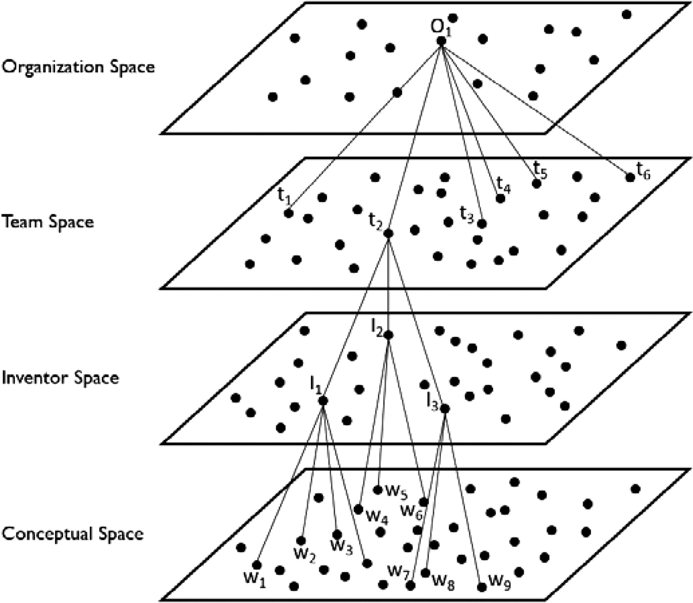
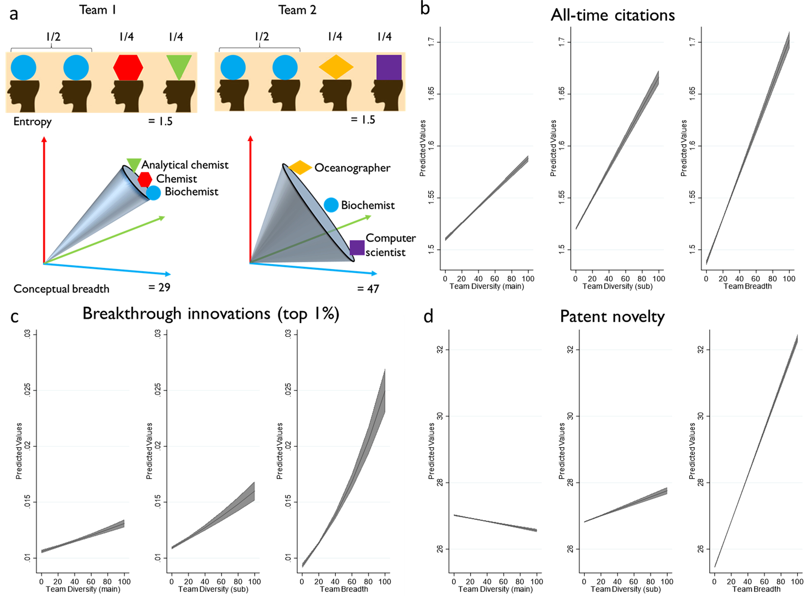

相关内容
- 文献汇总 | 词嵌入 与 社会科学中的偏见(态度)
- 词嵌入技术在社会科学领域进行数据挖掘常见39个FAQ汇总
- 转载|大数据时代下社会科学研究方法的拓展——基于词嵌入技术的文本分析的应用
- 可视化 | 人民日报语料反映七十年文化演变
- 词向量 | 使用人民网领导留言板语料训练Word2Vec模型
Aceves, Pedro, and James A. Evans. “Mobilizing conceptual spaces: How word embedding models can inform measurement and theory within organization science.” Organization Science (2023).
摘要
词嵌入模型是一种表示多维概念空间的强大方法，在多维概念空间中，所传达的概念可以相互关联、组合和竞争。此类模型代表了机器学习的最新进展，使学者能够用大规模文本数据局部和全局的单词共现，以最小的语义失真程度， 有效地编码复杂的意义系统。尽管词嵌入的使用有可能扩大组织科学中的理论可能性，但嵌入对于组织学者来说很大程度上是未知的，未发挥出词嵌入应有的潜力。我们的目标是通过为用户提供实用的路线图来展示嵌入模型在组织科学中的前景，以在他们的研究中调动该方法，并为开展该类研究的学者提供理论指导。 我们首先明确定义 概念 和 概念空间 的概念，然后继续展示如何使用词嵌入模型来表示和测量这些概念，并指出该方法的优点和缺点。然后，我们提供一组嵌入测量及其理论解释和灵活的扩展。我们的目标是从词嵌入的技术处理中提取概念，并将其置于实践的理论框架中，以加速此类研究。
一、介绍
过去十年，文本作为数据的计算使用在组织科学中显着增长（Hasan 等人，2015 年；Goldberg 等人，2016 年；Srivastava 等人，2018 年；Hannigan 等人，2019 年）。这种增长的主要原因是文本编码的概念信息赋予个人、组织、经济和社会行为以意义（Evans 和 Aceves 2016，Gentzkow 等人 2019），并且在过去十年中，来自组织环境的文本数据急剧增长，大大提高了文本的可用性。然而，文本中编码的 概念意义 本质上是高维的，这使得降低概念复杂性成为研究文本的学者的中心任务。词嵌入模型是由计算机科学家和语言学家开发的一个新兴工具系列，用于文本信息降维，以此提取概念及其数字表示。词嵌入技术的发展使组织科学家依赖于文本数据进行理论构造， 相比之前，数据中信息的保真度更高，由此文本数据与组织研究交叉场景形成了新的理论研究路线。尽管词嵌入模型在组织科学之外得到广泛使用，但由于组织科学领域的学者缺乏对词嵌入技术的理解， 不知如何将它们纳入理论发展过程的原则框架，词嵌入模型对于理论发展的价值仍然被掩盖。
词嵌入模型建立在高效的神经网络架构之上，并通过将复杂的语义系统有效编码到具有最小失真的稠密几何空间中，彻底改变了语义分析。这些模型代表了数十到数百个维度的空间中的语义，相对于语言中的单词和概念的数量来说，这个维度较低； 但相对于正式社会和文化理论家之前试图呈现概念信息的两到三个维度来说，这个维度却很高（奥斯古德 1964 年，史密斯-洛文和海斯 1988 年）。出于组织科学的目的，这些嵌入模型创建了社会系统中个体所持有的集体知识的 数字替身 ， 嵌入可以解决文化上隐含类比（Mikolov et al. 2013b），回答文化偶然问题（Devlin et al. 2019，Radford et al. 2022），并预测未来的知识发现（Tshitoyan等人 2019；Sourati 和 Evans 2021）。组织科学长期以来一直借鉴人工智能（AI）的表征概念， 在这里，我们使用人工智能的表示机制来增强组织理论研究（Csaszar 和 Steinberger 2022）。
然而，由于神经网络复杂，且难以理解的黑盒性质特性，围绕神经嵌入和人工智能方法对理论发展的价值存在争议。尽管预测能力很强，但此类方法往往缺乏可解释性（Knight 2017，Leavitt et al. 2021）。在组织科学领域中，学者缺乏此技术的理解，即
- 对于嵌入何时成为组织科学有用的方法论选择
- 如何在既定认识论标准内证明使用“复杂”神经嵌入方法的合理性
- 如何在各种嵌入中进行选择 等方法（例如，静态词嵌入与上下文嵌入、预训练嵌入与自定义嵌入）
- 使用嵌入进行研究的适当步骤以及评估嵌入研究的相关标准
- 最值得注意的是，研究界，特别是那些研究组织认知、文化、知识和意义的人，似乎对嵌入方法 如何适应将方法论选择与理论发展联系起来
我们的目的是通过两项贡献来解决这些问题。
首先，我们的目标是提供一个理论指南，为嵌入模型提供一个原则性的概念框架，学者可以使用该框架为他们的模型注入意义，并使学者们能够在理论发展过程中运用这些模型。我们这里的主要论点是，词嵌入模型中的每个向量代表一个概念，整个嵌入模型代表生成文本数据的社会系统的概念空间。嵌入模型所代表的概念空间是多维空间，其中从规范和知识到想法和发明的概念相互关联。这个框架使组织学者能够利用嵌入模型的概念空间，与组织科学的许多领域之间建立联系。例如，不同公司基于知识视角对该空间的差异化覆盖（Grant 1996），组织理论家在描述规范和制度（Scott 2003），类别学者援引在决定将一个物体归类到哪个概念时（Pontikes 和 Barnett 2015 ），创新学者直接理论化寻求测量发现和发明的新颖性（Fleming 和 Sorenson 2001，2004），并且团队研究人员寻求了解成员在空间中的不同立场如何影响创造力、协调性和绩效（Srikanth 等人，2016）。因为我们以 概念 和 概念空间 为中心的理论框架可以推广到组织理论的许多背景，所以我们希望嵌入模型所支持的研究将促进这些子领域之间更深入、更持久的对话。
其次，我们的目标是为利用嵌入模型进行理论发展提供实用的路线图。在此过程中，我们引导读者完成使用专利摘要语料库来实现词嵌入模型的过程，以表示现代技术创新的概念空间。我们解释了研究人员需要设置的模型参数，并逐步完成了他们应该采取的验证步骤，以评估模型是否有效地代表了他们感兴趣的概念空间，并提供了方法附录，其中包含实现所讨论的所有内容所需的代码。在注意到嵌入模型的可供性的同时，我们还讨论了它们不断发展的局限性，并提出了它们何时不适合组织分析的建议。然后，我们展示嵌入模型如何实现依赖于概念和概念空间的构造的理论化和测量。
我们概述了两大类词嵌入使用方法
- 度量之内/之间进行标记，我们提出了跟踪相关分析集内部和之间的概念关系的度量，以帮助我们跟踪与概念广度、概念距离和概念相似性
- 意义及其维度，我们提出了四种衡量标准，为了解意义及其与组织的关系提供了不同的窗口。为找出这些测量机会的理论可能性，我们重点介绍了一些研究进展。
本论文的一个核心主张是，在组织研究不同广度和深度，词嵌入工具现在使我们能够表示其概念空间，并且比以前更精细地表示细节。有鉴于此，我们的目标是展示嵌入模型如何在与组织科学家相关的领域中操作概念空间，使研究人员能够扩展和完善现有理论。我们希望这一理论指南和实践路线图将促进组织科学内部的理论扩展，该扩展首先是扩大对文本数据的访问以及用于分析的随附计算工具（Kovács 等人，2013 年; Goldberg 等人; 2016年，Hannigan 等人, 2016年, 2019； Guo 等人，2020）。
二、概念和概念空间
概念是人类生活的一个基本特征，我们的日常思维很大程度上依赖于它们所代表的信息，使我们能够对周围的人、物体和事件进行分类，并将这些信息传达给其他人（Murphy 2002；Bergen 和 Feldman 2008 年； Cassanto 和 Lupyan，2015 年）。概念是将我们的精神世界粘合在一起的粘合剂（Murphy 2002），赋予精神和物质体验以意义（Hannan et al. 2019）。在认知科学和心理学的语言中，概念是“事物类别的「心理表征」”（Murphy 2002）。
概念有两大功能：分类和交流（Medin and Rips 2005），这些功能都需要语言的帮助。实际上，我们通过在语言中分配一个单词或短语来表示一个稳定概念的信息内容。这就是为什么我们通过说出或写出 “manager” 一词来提及经理的概念，从而引出它所包含的概念信息，例如对他人的责任、做出决策以及相对于组织同行获得更高的薪水。然后，语言的单词分割并链接了社区的共享概念空间（Lupyan 和 Bergen 2015）。这样，“一个概念就是一个单词或短语的含义……[包括]像 ‘red’ 和 ‘grasp’这样的基本的、具体化的单词，以及像 ‘goal’ 和 ‘continuity’ 这样的抽象和技术单词”（卑尔根）和 Feldman 2008]）。
概念并不作为唯一的信息单位存在于真空中。相反，概念之所以有意义，是因为它们彼此相关（Hannan et al. 2019），“通过相似性和上下文的关系紧密地缝合在一起”（Hofstadter and Sander 2013）。在这种多重概念关系中存在着“我们对世界的大部分知识，告诉我们存在什么以及它们具有什么属性”（Murphy 2002，p.1）。例如，概念 resource 与 firm、constraint 和 natural 等概念相关。在文化系统的层面上，概念之间的相互关系引发了表征概念之间宏观层面有意义的维度。 manager 概念在某些方面与 coach 和 president 的概念很接近，而在其他方面则与employee 和 bureaucracy 的概念很接近。将概念理解为存在于复杂几何空间中的点，使我们能够思考和测量概念之间的距离远近（Hannan 等人，2019）。例如，与 playground 或 ice cream 相比， manager 与organization 和 leader 概念的联系更加紧密。我们将这种概念相关的多维空间称为概念空间（Hannan et al. 2019)
重要的是我们用复数来指代概念空间。对于许多单词来说，它们会根据使用的上下文表现出不同的概念信息模式。首先，概念可能会根据使用它们的社会背景而有所不同。例如，如果在执行董事会议室、商品交易大厅或附近的储蓄和贷款机构的背景下说出 “Bank”，指的是银行而不是河流。概念也可能根据使用时间的不同而有所不同。例如，“高科技” 一词所引发的概念关系会根据我们研究的是 1960 年代、1990 年代还是今天而有所不同。最后，概念关系因使用它们的社区而异，因此 “债务” 所捕获的概念将根据其是由首席财务官还是低收入个人使用而有所不同。概念所含信息存在多样性， 正如 Hannan等人（2019）指出，“虽然有些概念可能是天生的或生物驱动的，但大多数都是社会构建的。”
三、先前研究中的概念和概念空间
概念以及扩展的概念空间是人类思维和交流的基础（Sperber 和 Wilson 1986；，Murphy 2002；Hofstadter 和 Sander 2013）。正因为如此，概念和概念空间对于许多组织理论框架来说或多或少是明确和关键的。在某些研究（例如类别研究）中，概念具有核心重要性并且已经被明确地理论化。然而，在其他情况下，（例如，公司基于知识视角）概念被隐含地假定，即使它们是决定许多理论期望的基本成分。鉴于概念无处不在，对组织科学所有领域使用概念信息进行全面回顾超出了本文的范围。我们将简短、非详尽的回顾集中在概念和概念空间概念的三个领域——类别、知识和文化。通过嵌入技术处理并追踪存在于个人和社区头脑中的概念信息，研究其对组织行为和结果的影响。
3.1 类别
类别是具有共同特征和属性的实体组。如前所述，概念是类别的心理表征。对类别的研究主要集中在跨类别或模糊类别是否会增加或减少分类实体的估值。自Zuckerman（1999）以来的工作一直集中在消除歧义条件上，在这些条件下，类别跨越和模糊性会导致积极或消极的估值。许多研究表明，由于感知偏差（Durand et al. 2007）、不符合受众期望（Hsu 2006)、Hsu et al. 2009；Leung and Sharkey 2014） ，跨越模糊的类别会损害实体估值，或降低分类对比度（Negro et al. 2010）。其他研究表明，跨越类别可以创造积极的估值结果，因为它表明非典型性可以放大良好的表现并缓冲不良表现（Smith 2011），一个类别可以锚定认知，而另一个类别可以有益地修改认知（Wry et al. 2014）。还有其他研究表明，效果取决于受众，有些人喜欢跨类别，而另一些人则不喜欢（Pontikes 2012）。通过这些方式，类别可以通过影响有关类别成员资格的概念信息的解释方式，对行为和绩效产生积极或消极的影响。4
尽管类别范式的贡献历来是通过类别成员的集合和模糊集合理论（Hannan et al. 2007）概念来实现的，但最近的工作开始纳入其多维性（Hannan et al. 2019）和类别的分级归属感。组织学者感兴趣的许多现象都是由概念及其代表的类别之间的精确距离支撑的。例如，鉴于专利所贡献的技术领域，专利通常分为类别和子类。然而，专利中编码的想法可以传播到创新空间的广泛领域，即使只分类在一个类别中。正如我们稍后讨论的，转向概念的几何概念，使分析师能够考虑隶属度、重叠和连续距离影响底层实体评估判断的方式（Hannan 等人，2019 。
3.2 知识
众所周知，知识很难具体说明，并且在哲学、认知科学和社会科学领域，围绕其概念性质进行了长期而活跃的争论（Steup 和 Neta 2020）。然而，过去几十年来，组织科学在微观、中观和宏观层面上进行了大量研究，解决有关知识及其在团队、组织和经济活动中的作用的问题。从对团队成员专业知识的研究（Srikanth et al. 2016）到公司基于知识和注意力的观点（Kogut and Zander 1992，Grant 1996，Ocasio 1997）；从交互记忆系统（Ren 和 Argote，2011）到创新流程（Garud 等，2013）；从组织设计（Foss et al. 2013）到搜索和探索（Lavie et al. 2010），知识在最近的组织理论化中发挥着核心作用。
无论人们对知识的定义如何选择，命题性知识从根本上都与概念信息相关。命题知识采取“ S [主体]知道p [命题]” 的形式（Ichikawa and Steup 2018）。在某种程度上，命题是由语言中的单词编码的，并且单词代表概念信息，命题知识依赖于概念以及它们如何在概念空间中交织（McGrath and Frank 2020）。以命题“泰勒知道氢的主要工业应用是氨的制造”和“特里知道量子算法可以具有较低的时间复杂度”为例。这些知识命题中的每一个都代表了不同的概念意义，前面提到的领域将以不同的方式操作它们。例如，团队学者可能会强调，由泰勒和特里组成的专利团队将拥有多样化的基础知识。采取基于注意力观点的学者会注意到，泰勒和特里可能会以不同的方式关注知识空间，以应对组织变革。研究创新的人可能会注意到如果泰勒和特里共享办公空间，知识重组的潜力。研究搜索的人可能会假设，为了解决问题，泰勒和特里会以不同的方式搜索概念性解决方案。在所有这些情况下，就这些领域通过诉诸语言编码的命题知识来理论化知识动态而言，它们以基本和可测量的方式参与概念和概念空间。
3.3 文化
文化被不同地概念化为集体的共同价值观、故事、框架、工具包和类别（Geertz 1973；Pettigrew 1979；Lamont 和 Small 2008；Small 等人 2010；Giorgi 等人 2015）。文化建构已成为组织研究的核心，在从个人和团队到组织和国家的各个层面的分析中都得到了运用（Giorgi et al. 2015）。从理解文化如何塑造职业结构（Glynn 2000）、组织领域（Anteby 2010）和创业环境（Lounsbury and Glynn 2001，Rao and Giorgi 2006）到它在讲故事（Lounsbury and Glynn 2001）和身份建设中的作用（Ravasi 和 Schultz 2006），从其对人际沟通的塑造（Srivastava 等人，2018）到对组织绩效的影响（Corritore 等人，2020），文化深深地受到概念及其互动方式的调节。文化以集体认知过程为基础（DiMaggio 1997，Patterson 2014），很大程度上可以通过语言痕迹来获取。语言进入文化的窗口（Goldberg et al. 2016，Srivastava et al. 2018，Corritore et al. 2020）很大程度上是通过它所表达的概念来呈现的，使得概念和概念空间成为组织文化研究的重要支柱。
基于它们在形成范畴、知识和文化方面的关键作用，概念和概念空间已成为许多组织理论赖以建立的知识支架的重要组成部分。然而，概念和概念空间通常仅被用作缺乏精确和可扩展的经验表征的不明确的隐喻。这限制了研究使用粗粒度的代理测量或允许手动编码和解释的小数据集。接下来，我们提出词嵌入模型是一种最先进的工具，用于表示概念和概念空间，可以添加到组织学者工具包中。就组织学者寻求将概念和概念信息所支撑的结构操作化而言，他们将得到这类新模型的帮助。考虑到这一点，我们接下来介绍嵌入模型如何工作以及为什么它们可以作为概念和概念空间的有效表示。
四、使用词嵌入来表示概念和概念空间
4.1 越来越多地使用文本作为数据
过去 10 年，通过计算工具和方法进行文本数据分析出现了爆炸性增长。从社会学（Evans and Aceves 2016）到经济学（Gentzkow et al. 2019）和政治学（Grimmer and Stewart 2013），文本正迅速成为组织、经济和社会生活的中心观察站。文本数据提供了在线知识社区、财报电话会议和公司报告、产品评估、组织电子邮件和讨论板、历史档案、视频转录和电影字幕、医疗记录、电子商务、社交媒体等多种领域的丰富思想和行为痕迹。媒体平台、新闻文章、科学学科等等。总而言之，这些文本数据源比以往任何时候都更深入、更广泛地进入组织生活。正如Evans 和 Aceves（2016 年）指出的那样，文本数据现在使我们能够访问“有关正在玩的社交游戏的隐藏元素及其背后的社交世界”的深层信息。然而，这些语料库的庞大规模及其广泛的范围意味着，提取理论上有意义的信息信号越来越多地受到计算方法的帮助，利用信息技术方法获取大量非结构化文本数据，并将它们转换为有意义且相关的度量。5
文本数据与组织学者习惯使用的定量数据之间的一个主要区别是文本是高维的。正如Gentzkow 等人（2019 年）指出，“仅使用英语中一千个最常用单词的 30 个单词的 Twitter 消息样本 […] 的维度大致与宇宙中的原子一样多。” 因此，使用文本作为数据的学者的中心任务是通过对数据施加限制来降低维度。过去二十年里，组织科学中用于降低这一维度的一些最常用的计算工具是词典法、语义网络和主题模型。尽管这些方法有其优点，但一个主要缺点是它们无法对文本中存在的细粒度概念关系和关联进行编码 。接下来，我们将展示嵌入模型如何利用文本中的局部和更广泛的信息来训练概念含义和概念空间的高保真表示。在此过程中，我们展示了词嵌入模型如何克服先前方法来表示文本中编码的含义的一些局限性，从而允许对理论结构进行更细粒度的测量，并实现新的理论可能性。
4.2 词嵌入
我们之前解释过，概念是事物类别的心理表征，人类通过在词典中分配一个单词或短语来表示稳定的概念，并指出，概念只有在与跨多个维度的其他概念相关并为其提供信息时才有意义。密集的概念空间。在这里，我们认为词嵌入模型是最近开发的一类从机器学习应用于自然语言处理的模型，它使我们能够有效且高效地表示概念空间，并将这些空间用于追求组织科学。词嵌入模型是文本语料库中单词的连续表示，可以进行几何解释。词嵌入的方法论假设，一个词的含义很大程度上是由出现在其直接和更广泛上下文中的词所决定的，这一想法受到结构语言学家的启发，他们已经证明，含义的差异与局部分布相关（Harris 1954）， 这个想法现在被称为 「分布式语义学」，Firth 的著名描述是：“观其伴而知其意”（Firth 1957，you shall know a word by the company it keeps）， 一个单词所代表的概念或含义可以通过它周围的单词的分布来推断。
以这种分布式方式思考概念和概念空间的底层计算架构可以追溯到 20 世纪 80 年代初期计算机科学家 Geoffrey Hinton 的工作（Hinton 1986 , Hinton et al. 1986）以及认知科学家在这一时期研究的并行分布式处理模型（Rumelhart 等人，1986a，b；McClelland 和 Rumelhart，1989）。分布式架构是当前嵌入语言模型的基础（Mikolov et al. 2013b、Pennington et al. 2014、Devlin et al. 2019、Liu et al. 2019、Brown et al. 2020、Fedus et al. 2020）。 2021）， 嵌入模型 Word2Vec 算法(Mikolov 等 2013b) 相对简单易用，能够处理中等规模的语料库来。 Word2Vec 与 GloVe（Pennington 等人，2014 年）和 FastText（Bojanowski 等人，2017 年）等嵌入算法，是 ChatGPT 和相关模型的基础。
找个例子来帮助理解算法， 现在我们要创建过去 50 年创新的概念空间表示。首先需要概念活动领域的文本数据， 美国专利局数据提供了创新活动的踪迹，其中包括所有专利的文本、摘要、描述和权利要求。在整篇论文中，我们使用这个专利摘要语料库来指导读者完成训练这个概念空间和构建相关概念测量的过程。数据是从Patentsview.org免费下载的，使用 1976 年至 2019 年间发布的所有专利来构建本文中发现的词嵌入模型和测量相关指标。
想象一下，专利语料库中的每个独特单词都是从放置在巨大冰箱上的随机放置的 “word magnet” 开始的（Hovy 2020）。当连续词袋 (CBOW) 算法滚动浏览语料库时，使用每个目标词周围的单词词(滑动窗口的上下文)来预测目标词（更多内容见下文）。该算法的最终目标是产生一种语义模型，其中出现在相似上下文中的单词彼此接近，而来自不同上下文的单词则相距很远。由于用2维概念空间不足以捕获每个单词的全部含义，因此该算法改为在更高的（100-1,000）维空间内捕捉语义。通过这种方式，目标单词的概念信息是从它周围的单词中归纳出来的，将语料库中的每个单词绘制为n维空间中的坐标或向量。正是单词在这个n维向量空间中的相对位置，使我们能够将词嵌入模型可以描述代表人类概念活动区域的概念空间。6
概念意义的识别假定了嵌入空间的可解释性。接下来，我们提出了对这些概念空间的一系列提示和测量，作为从中产生结构化解释的方法。这很像心理学家使用 心理测量调查 将概念印象转化为可解释的观点（Michael Furr 2021）。或者认知人类学家如何使用结构化任务，例如排序和排名（Spradley 2016），将概念性的世界观转变为可解释的世界观。我们认为嵌入模型必须接受结构化测量（就像向人类受试者提供的心理测量问卷）使他们的 **概念景观(conceptual landscape)**变得可解释。接下来，我们将引导读者如何用专利语料库训练创新概念空间表示的过程。之后， 我们概述了该方法的优点和局限性，并指出这些方法与先前的文本分析方法和组织研究实践的关系。
4.3 选择语料库
学者可以根据应用使用两种词嵌入模型。一方面，研究人员可以使用自有文本语料库来训练表示， 据此了解文本所涉主体(个人、团体、社会)行为的概念空间是什么样子， 以及概念关系揭示人类活动背景。在我们的示例中，专利创新在专利语料库中得到了很好的体现，因此我们在下面展示了如何从头开始训练概念空间表示, 以及它揭示了哪些概念联系。研究人员可以从头开始训练语料库的其他例子包括在线社区（Burtch et al. 2021、Aceves et al. 2022、Chambers et al. 2022）、学术学科（Hofstra et al. 2020、Lin et al. 2022） 、劳动力市场（Bana 2022）、公共记录（Arseniev-Koehler et al. 2022）、产品和公司描述（Guzman and Li 2023）以及财报电话会议和公开演讲（Kirgil and Voyer 2022）。
或者，如果研究人员想要在较小的语料库中追踪概念动态，而该语料库的大小不足以训练独特的、特定于上下文的嵌入，那么研究者可以使用预训练嵌入模型，需要注意，训练预训练嵌入模型的文本与研究者小语料库在内容、场景要有相似性。广泛使用的预训练嵌入已经在来自海量语料库的文本上进行了训练，例如新闻（Google 2013）、维基百科（Devlin et al. 2019、Grave et al. 2018）。训练这些预训练嵌入模型的文本语料体量很大， 内容题材往往包含我们较小文本样本中存在的概念。因此使用预训练嵌入对这些概念的信息进行编码，并可用于近似相关距离。政治和历史语义背景下的研究发现，预训练嵌入提供的结果与特定于上下文的嵌入相当（Kozlowski et al. 2019，Rodriguez and Spirling 2022）。如果有理由相信研究项目中包含的概念和想法没有在这些大量预训练嵌入中得到很好的体现，研究人员可以使用较小语料库中的文本对其进行 微调（Fine-Tune）（ Liu et al. 2019，Burtch et al.2019）， 2021）。微调将预训练的概念空间扭曲为与样本一致（Liu et al. 2019），更好地反映概念之间的关系。
最后，使用哪一种嵌入(自己训练的嵌入、 预训练的嵌入、微调的嵌入)将取决于研究人员的目的以及他们寻求追踪的概念动态的类型。接下来，我们将重点描述从头开始训练和验证嵌入模型的过程。在接下来的部分中，我们讨论不同参数设置和策略之间的权衡，并鼓励读者遵循文章文本和在线附录。
4.4 清理语料库
训练嵌入模型的第一步是使用 Python 等编程语言录入文本语料库， 首先获取每个专利摘要中的文本， 并将连续的文本进行切词，转化为单词列表 。然后，我们将文本小写，删除标点符号和数字字符串，并将每个摘要转换为称为token的单词列表。但是这可能破坏一些词组语义，这里使用 bi-gram， 识别高频共现的词组成词组，例如当 “electric” 和 “vehicle” 这两个词在某些上下文中一起出现时，它们将被统一形成短语和概念 “electric_vehicle” 。建立单词或短语列表后，执行单词嵌入算法来学习单词或二元组及其语言上下文之间的最佳距离，以保留语言中单词和短语的概念空间。
4.5 训练嵌入模型
第一步是选择词嵌入算法， 浅层神经网络构建的单词表示（例如，Word2Vec、FastText；Mikolov 等人，2013b）、共现矩阵的低秩近似（GloVe；Pennington 等人，2014） ，或来自 Transformer 的深度上下文嵌入（例如 BERT、GPT；Devlin 等人 2019、Radford 等人 2022）。这些不同算法输出，都可以被解释为n维概念空间，其中单词或短语由空间内的向量位置表示。本文我们只介绍 Word2Vec 算法， word2vec 是一种广泛使用的训练概念空间的算法（Mikolov 等人，2013a，b）。
Word2Vec 算法的一种流行实现算法是连续词袋 (CBOW) 算法，可以在 Gensim python 库中轻松访问，该算法使用目标单词的语言上下文来预测被扣掉的目标词 (可以简单的理解为让机器做完形填空题) ， 比较适合小规模数据集。 Word2Vec 还实现了另一种 Skip-Gram 算法，该算法通过从目标单词预测上下文单词来反转 CBOW 的预测任务，比较适合大规模数据集。相比之下，skip-gram 将每个上下文目标对（例如，T：“房子”，C：“宽敞”）视为单独的观察，因此可以更好地捕获精确的语义，但需要更大的语料库才能获得卓越的性能。
4.6 维数
考虑维数很有必要。朴素的模型可以将不重复总词数作为维度， 例如包含 100,000 个不重复单词的语料库， 任何单词都需要 100,000 维才能准确表示。然而，当单词从上下文中被识别为相似时，可以一定范围内减少维度数。维度过多会导致内存需求和冗余增加，并降低可解释性；维度太少会扭曲距离并且无法解释语言的不及物性。通过这种方式，通过具有至少足够的维度来捕获所讨论的复杂语义关系，可以获得准确的预测。
在实践中，300 维已经成为一个标准，很大程度上源于最初的 Word2Vec 论文之后的惯例，该论文通过交叉验证确定了最佳维数，以减少预测屏蔽词任务中的错误。大多数后续分析都是建立在较小、多样性较低的文本集合上，需要较少的维度，因此 300 通常被用作上限。最近的工作表明，应根据语料库统计数据选择维度 - 语料库词汇表中成对等距单词的数量提供了维度数量的下限，低于此界限通常会导致单词嵌入质量下降（帕特尔和巴塔查亚 2017）。霍夫斯特拉等人。(2020)使用 100、200 和 300 维的模型找到了稳健的结果。
如果分析师寻求实现维度可解释性，他们必须以最小失真来确定表示数据所需的维度数。 但这最后一步一半很少执行，因为维度的优化需要大量的时间和计算资源。
4.7 窗口尺寸
回想一下，窗口大小是指算法将用来焦点目标词（或其邻居）之前和之后的单词数量。该窗口最小可以是 1。对于较小的窗口，算法将倾向于对句法关系进行编码（例如，名词后跟动词）。随着窗口大小的增加，更多的含义和语义被编码到模型输出中。考虑Rodriguez 和 Spirling (2022)的示例，其中包含两个句子的语料库：(1)“狮子吃肉”和 (2)“牛吃草”。当窗口大小为一时，我们会知道牛和狮子都吃东西，从这个意义上说，牛和狮子在语法上是等价的，因为我们没有足够的信息来区分两者。然而，随着窗口的增加，算法开始对牛与狮子的含义进行更多编码。与维度数量一样，这里的回报也递减，窗口大于五个字的模型性能略有改善（Rodriguez 和 Spirling 2022）。 BERT 和 GPT 系列等上下文模型具有更大的窗口，这些窗口通过注意力过程进行驯服，算法通过该过程识别哪些上下文单词对于解释焦点单词的含义很重要（Vaswani 等人，2017 年）。
4.8 验证模型
最后一步是验证词嵌入模型，这样做是为了确认算法学习的表示与文本数据所承载的真实人类活动的概念空间表示尽可能相近。论文附录第 2 节描述了关于专利嵌入的七个详细验证程序，表明该模型有效地学习了创新空间的表示。这些包括（1）邻近嵌入词的语义相似性；(2)具有嵌入距离的语义梯度；(3)嵌入簇与语义域之间的对应关系；（4）物理世界距离与嵌入之间的相关性；(5) 社会距离与嵌入之间的相关性；(6) 嵌入空间类比推理的准确性；(7)嵌入文档的语义一致性。我们还讨论了第八个“额外”测试，即图灵测试（Turing 1950）。由 Transformer 支持的现代上下文嵌入的评估标准是它们是否能够与人类毫无区别地参与任何分类、关联、意义生成或集成任务，包括普通对话和专家教程。OpenAI 的 ChatGPT 和许多竞争的聊天机器人已经展示了如此强大的性能，以至于图灵测试正在迅速从上限转变为基线基准。这些验证步骤与论文最后部分的测量相结合，作为嵌入模型的有用提示prompt和测量，使研究人员能够对其编码的概念空间提供结构化解释。
4.9 词嵌入方法的优点和缺点
4.9.1 无需正式指定相关尺寸
对概念建模的正式尝试试图通过逻辑演绎方法清楚地枚举概念的相关维度（Gärdenfors 2004、Gardenfors 2014、Hannan 等人 2019）。尽管这种方法对于理解限定领域内的概念很有用，但即使如此，它也可能不切实际且难以衡量，因为很难先验地陈述分析师应预期的相关维度（Hofstadter 和 Sander 2013 ）。 词嵌入的优点在于，概念之间的关系以及对任何给定概念重要的相关维度可以从语言的使用方式中推断出来，因此不需要事前指定。鉴于在分析之前没有必要陈述相关维度，即使是最复杂的组织行为剧场也变得易于分析处理。正如其他人所指出的，“词嵌入为语言中包含的多个维度的含义提供了全面且有意义的见解，这是以前的方法无法捕获的”（Lix 等人，2022 年，第 8434 页）。在某种程度上，这种优势源于这样一个事实：神经网络架构能高效地记录意义的维度。
4.9.2 更大的有效维度。
嵌入通常由 100 到 1,000 个密集编码维度表示。编码的密度意味着每个词向量在所有建模维度上都有一个非零坐标。正如附录中所指出的，主题模型可能具有相同数量的主题（例如，100-1,000），但这些主题被稀疏编码以方便人类解释，使得主题仅具有一些基本上非零的单词加载，并且文档仅具有少量非零的主题负载。因此，主题模型是为了描述而构建的，但代价是迫使其表示的有效维度从数百个减少到几个，从而扭曲了本来可以在主题空间内计算的距离。相比主体模型， 词嵌入使用密集编码，每维度的嵌入很难理解和描述，但距离具有更大的自由度，可以更精确地编码含义。通过这种方式，相对于低维理论和测量，嵌入为分析师提供了“大量潜在轴，个人和社会群体可以沿着这些轴竞争、合作、分裂或合并”（Kozlowski et al. 2019，p.27 ）。
4.9.3 无监督训练。
词嵌入还有一个特殊优点，即训练模型时， 以看似无监督或自监督的方式进行，从而避免了手动编码文本语义内容的繁琐，完全由机器学习。在我们的创新示例中，向量空间由我们专利语料库中的每个发明人按照他们所写句子的数量和长度的比例进行监督。每个单词的滑动窗口都是为了向专利审查员和未来的发明者传达一种含义而构建的，该算法用于构建向量空间并以概念上适当的方式定位单词。因此，学者们可以利用专利语料库来训练 技术创新 的概念空间，利用财报电话会议记录和新闻稿来训练 上市公司沟通 的概念空间，利用分析师报告来训练 投资分析 的概念空间，或者特定领域的概念空间。使用内部通信（例如 Slack 和电子邮件）来了解公司的知识。这些概念空间可以在最少的监督下进行训练，因此很快成为有价值的观察站，用于追踪组织科学家关注的组织生活的静态和动态（Hofstra et al. 2020，Whalen et al. 2020，Burtch et al . 2021，Waller 和 Anderson 2021、Aceves 等人 2022、Carlson 2022、Chambers 等人 2022、Guzman 和 Li 2023、Lawson 等人 2022、Lix 等人 2022）。
4.9.4 共现是不必要的。
这些模型的另一个优点是，两个概念不必在任何文档中同时出现，就可以将它们编码为相似的向量。所需要的只是它们与相似的概念同时出现。例如，我们可以先验地指出 医生 和 律师 在某些方面非常相似（例如，他们需要高级学位，具有高收入水平等），但他们可能永远不会同时出现在语料库的同一文档中。尽管彼此之间缺乏共现性，但它们很可能都独立地与高收入*、高学历、*白领等概念同时出现，从而最终拥有编码这些相似性的接近向量。因此，嵌入模型的底层计算架构可以更好地近似社会和文化含义，而无需求助于严格的共现。
4.9.5 上下文相关的含义结构。
使用定制训练的嵌入模型的一个优点是它将捕获上下文相关的含义结构。例如，“甜” 的含义在软件团队的背景下与 烹饪 的背景下会有所不同。正如Lix 等人。（2022）指出，在软件团队的背景下，与 “甜蜜” 最接近的术语是 “强烈”、 “兴奋” 和 “耶”。此外，就同一个单词编码不同概念（一词多义）而言，单词每种含义的概念信息都位于单词嵌入内的线性叠加（Arora et al. 2018）。这意味着编码诸如 “Bank” 之类的单词的n维向量包含其代表的所有概念的概念信息，例如 河边 或 金融机构。通过这种方式，即使在多义词的情况下，单词的上下文相关含义也会被编码到模型中。当这些上下文相关的含义不仅不同，而且是排他的或相反的时，来自转换器的上下文相关嵌入可以为上下文中的每个单词呈现不同的单词向量。
4.9.6 几何有助于概念、人、群体和组织的细粒度表示。
我们认为，词嵌入模型可以在训练的语料库范围内产生人类活动概念空间的细粒度表示。这意味着，从概念空间内编码的信息中，我们可以恢复个人、群体和组织本身的细粒度表示。以我们的创新案例为例，图 1描述了在说明性二维空间中这是如何实现的。学习到的概念空间将由单词或短语w表示的概念作为其最原子的分析级别。我们的限制性示例显示了在2维空间中排列的九个单词。单词 1-3 由发明人 1 使用，单词 4-6 由发明人 2 使用，单词 7-9 由发明人 3 使用。通过获取每个人的单词向量的质心向量，我们可以得出每个发明人在创新的概念空间。将这个过程提升到团队和组织级别，我们可以在发明人团队和组织的概念空间内得出独特的向量。因此，词嵌入架构不仅在概念的最原子级别上是细粒度的，而且还可以在更聚合级别上提供细粒度的表示。相对于团队多样性、组织差异化和注意力等结构的粗粒度代理，这形成了显着的测量改进，这些结构在嵌入特定概念空间时是有意义的。
 图 1.嵌入作为概念、人员、群体和组织的细粒度表示
4.9.7 细粒度几何减少了上下文信息的丢失。
由于粗糙、粗粒度的代理指标无法承载相关信息，在实证分析和相关理论构建中就无法利用这些信息。嵌入模型的优势在于其独特的信息表征，可以携带更多的信息，信息的粒度更小，保存的信息量更多。图 2使用团队多样性的示例来说明如何实现这一点。图 2(a)显示了两个团队，1 和 2，每个团队要么通过熵（一种标准的、集合论多样性的理论度量（顶行））来表示，要么通过概念广度（基于底层概念的细粒度度量）来表示。团队调动的信息（底行）。团队 1 和团队 2 都有四名成员，团队 1 由两名生物化学家、一名化学家和一名分析化学家组成，团队 2 由两名生物化学家、一名海洋学家和一名计算机科学家组成。由于两个团队的团队成员类型比例相同，因此它们都被编码为具有相同的团队多样性熵度量 1.5。**然而，当考虑团队成员的概念信息时，我们发现它们是本质上不同类型的团队，团队 1 的多样性或概念范围远不如团队 2 **。这表明粗粒度的测量可能会留下未开发的有价值的上下文信息（Wolpert et al. 2014，DeDeo 2017）。因此，我们应该看到更细粒度的衡量标准与相关的、理论上的绩效结果之间的联系更加紧密和一致。
 图 2.（在线彩色)细粒度表示可防止有价值的信息丢失
专利数据集使我们能够通过三种构建的措施来说明这一主张。首先，集合论团队多样性度量，使用团队先前专利在专利主要类别中的分布（Huo 等人，2019）。第二种替代措施使用专利子类，以便它们提供相对于第一种更细粒度的措施。第三个衡量标准依赖于团队成员先前专利在创新概念空间内的概念广度。
4.9.8 词嵌入的局限。
到目前为止，我们的注意力仅限于讨论嵌入模型的结构，描述它们与概念空间的关系，并注意到它们的优点。在这里我们将说明其局限性，讨论它们的严重性、改善方式，以及何时不要用词嵌入的意外情况。我们讨论三类限制。第一个源于神经网络模型一般复杂的“黑匣子”性质，以及这带来的具体挑战，涉及输入数据的偏差，以及模型正确推理的范围，特别是那些对超出分析师背景的数据进行预训练的模型。第二个与这些模型的大小以及训练它们所需的数据量有关。第三个问题涉及词嵌入模型的具体局限性以及从脱离韵律和表达上下文的文本数据中分析含义的挑战。
许多学者首先担心的是，多级神经网络模型显得复杂且在统计上难以理解，经常被批评为“黑匣子”方法，无法“打开”以询问其性能背后的机制（Knight 2017，Leavitt et al . 2021） 。现代神经网络词嵌入模型通常作为自监督模型实现，该模型启发式搜索单词之间的依赖关系空间以预测屏蔽词的身份。自从第一个高性能嵌入发布（Mikolov 等人，2013b）以来，对其黑盒性质的一些担忧已经减弱，因为数学家发现最流行的“浅”词嵌入模型（如 Word2Vec 和 FastText）获得了很大的优势。其强大功能来自于近似易于理解的矩阵分解方法的运算，例如因子分析、主成分分析和对应分析（Levy 和 Goldberg 2014）。
“黑盒”输入输出方法带来的一个相关潜在限制是，输入的偏差将转化为输出中的偏差——用于训练嵌入的语料库的偏差将被编码在生成的单词嵌入模型中（Bolukbasi等人，2016）。当模型用于现实世界的下游应用程序（例如推荐服务）时，这可能是有害的。例如，硬编码到嵌入中的种族和性别刻板印象可能会导致有偏见的建议（例如，评估是否适合招聘职位或预测财务违约的可能性），并导致不公平和不道德的决定（例如，拒绝工作或信贷） 。学者们应该根据他们的研究问题和设计，主动考虑这种负外部性是否可能，并在对人类造成伤害的可能性足够高时，偶然放弃嵌入。然而，在某种程度上，理解社区和研究背景中概念关联的本质是核心，研究人员将需要这些偏见进行分析。如果不包括它们，模型以及研究设计就会错过表征其研究背景的关键社会和文化规律。
如果分析人员对生成语料库的上下文没有清晰的了解，就会出现另一个相关的限制，这样他们最终可能会做出不适用和不相关的推论。例如，强调意义随时间变化的研究（Caliskan et al. 2017、Garg et al. 2018、Kozlowski et al. 2019）的特点是词义表现出来自外源冲击的间断变化，从而重新配置了概念关联的结构。穿过空间。想一想 2005 年卡特里娜飓风之后“卡特里娜”的含义发生了怎样的变化。2009 年金融危机之后，金融术语的含义发生了重新配置，部分原因是添加了“问题资产救助计划”等许多新术语。忽略外源冲击可能会导致对后面和验证部分中描述的措施的错误解释，将其视为仅由进化产生的结果，从而导致错误的推论。这是一个特别成问题的问题，因为许多最准确的词嵌入模型都是在从网络上提取的大量文本语料库上进行预训练的。此类模型可用于引导非常小的文本数据之间的有意义距离，这是一项常见任务，但如果预训练数据是异构的，则距离可能无法反映焦点文本的概念世界。
接下来的两个限制必然是其嵌入优势的另一面。词嵌入模型产生的细粒度信息会带来特定研究可能或可能无法维持的成本。首先是模型尺寸。每个单词的数百个维度的细粒度信息或上下文嵌入需要比简单的字典计数或潜在狄利克雷分配主题模型更大的存储空间。这与通常用于将数据维度减少到两个或三个的因子和主成分分析形成鲜明对比。词嵌入模型使用更多维度（通常为 200-500）来更准确地预测数据的屏蔽部分。尽管如此，当前个人计算机的计算能力和存储能力现在允许训练合理大小的嵌入。
与此相关的是，词嵌入模型需要比先前模型更多的文本才能稳健地估计概念空间。当大型语料库与研究主题相似并且可以用作理论相关文档或微调过程的初始化的代理时，可以通过迁移学习来弥补这一挑战。然而，有时相关语言在内容、目的或形式上与模型预训练的数据有很大不同，它需要独立建模，但又足够小，无法维持对嵌入模型的稳健估计。在这种情况下，使用字典计数或主题模型可能会更好，因为数据只能维持粗粒度的关联，而这些方法旨在捕获粗粒度的关联。
最后一类通常涉及词嵌入和文本方法的特殊限制。首先，静态词嵌入本身并不处理一词多义，即一个词（例如 “bank” ）编码多个概念（例如金融机构、河边、侧向倾斜）的情况。尽管多义词的存在可能会影响后续一些指标的测量，但也存在抵消的力量。一方面，研究发现多义词的含义以相互线性叠加的方式编码在单词向量内（Arora et al. 2018）。这意味着该算法通过同时考虑单词的所有含义来对单词在概念空间中的位置进行编码，从而克服了原本可能存在的严重缺陷。另一方面，上下文嵌入架构（在线附录中有更详细的描述）通过根据焦点词周围的上下文输出不同的向量来明确解决多义词的问题。每个单词不是单个向量，而是根据用途而变化的向量云。如果分析师怀疑一词多义可能是特定分析的严重问题，他们可以偶然使用上下文嵌入并规避这种担忧。
最后一个潜在的限制是文本方法的一般特征。只要文本数据是转录语音话语的产物（例如，欧洲央行或美联储主席演讲、政治演讲、财报电话会议、电视或电影文字记录、对话互动），语音的语调、语气和音色将没有纳入到嵌入表示中。考虑到。鉴于某些语言（例如中文）更严重地依赖语调来传达含义，这可能或多或少存在问题，具体取决于话语发生的社会背景及其表达语言。因此，在语调和语气在语料库中发挥重要作用的情况下，学者们应该讨论他们的嵌入模型选择和解释决策的后果。
4.10 在研究中使用词嵌入模型的路线图
现在我们大脑对词嵌入模型是什么、如何表示概念空间、如何训练、优点和局限性有了框架性的认知，接下来可以将它们整合到研究和理论构建的标准方法中。表 1列出了如何将嵌入模型集成到科学流程中的路线图。
- 步骤 1-3 是研究过程中的标准步骤，包括确定一个可行且有趣的研究问题，通过在适当的实证背景下进行评估，为重要的理论问题提供信息（Weick 1989 ）。
- 步骤 4-9 总结了本文到目前为止对嵌入模型的讨论。
- 步骤 10 和 11 ，与下一节指标度量有关，通过标准定量和定性方法调动该度量。
表 1.在研究中使用词嵌入模型的路线图
| 步骤 | 活动 | 基本原理 |
|---|---|---|
| 1. 确定研究问题 | 如果研究问题至关重要，请确定文本数据是否有助于在理论研究上有帮助。 | 吸引研究人员把注意力聚焦在理论问题、词嵌入构建研究构念回答问题的交叉点。 |
| 2. 理论建立及相关理论构建 | 确定使用哪种理论框架来解决研究问题以及通过嵌入模型来操作哪种理论构念。 | 理论构念与其词嵌入指标(构念的衡量）之间的紧密联系能够实现累积的理论发展。 |
| 3. 定义经验背景 | 选择适当的实证背景，在其中回答研究问题并动员理论框架和构念。 | 确保研究问题、理论框架和用构念以逻辑方式相互加强。 |
| 4.指定将用于表示经验背景的概念空间的文本数据 | 描述将用于训练词嵌入模型和测量感兴趣的理论构念的文本数据的范围。 数据是否有效地涵盖了您想要得出理论结论的经验背景下的行为活动范围？ | 确保用于计算理论构造度量的词嵌入模型在逻辑上映射到并有效地代表所提出的理论框架内的实证研究背景。 文本数据的范围应该在逻辑上映射到所讲述的理论故事的范围。 |
| 5.确定文本数据的大小和范围 | 数据是否足够大以学习相关概念空间的准确表示？ | 文本数据的大小将决定是否应该训练自定义嵌入，或者是否应该使用可用数据对现成的嵌入进行微调。 |
| 6. 给定数据大小，要么训练独特的词嵌入模型，要么微调现有模型 | 如果文本数据足够大，则训练自定义嵌入来表示感兴趣的经验上下文的概念空间。 如果文本数据不够大，请使用这些数据来微调现有的现成嵌入模型。 | 确保用于测量理论结构的嵌入模型能够有效地表示经验背景的相关概念空间。 |
| 7. 如果训练独特的模型，请选择一种算法 | 在连续词袋 (CBOW) 或 Skip-Gram 模型之间进行选择。 | CBOW：在较小的数据集上可以有更好的性能。 Skip-gram：可以更好地捕获语义。 |
| 8. 如果训练独特的模型，确定相关参数 | 选择窗口大小和维数。 | 窗口大小：标准做法是 5。较小的窗口可以更大程度地捕获语法，较大的窗口可以更大程度地捕获语义，但收益递减并增加计算成本。 维度数：标准做法是 300，超过此点后性能回报递减。 |
| 9. 验证词嵌入模型 | 请遵循在线附录中的验证程序。 | 确认嵌入模型准确有效地表示了经验背景的概念空间。 |
| 10. 计算相关度量 | 通过确定将用于实施感兴趣的理论构念的相关概念集，创建“实际措施和应用”部分中的措施之一。 | 使学者能够将该测量用于定量或定性分析。 |
| 11. 在标准定性或定量方法中使用计算的度量 | 对于定量分析，该度量要么成为自变量，要么成为因变量。 对于定性分析，学者可以提供解释性分析，因为它们可能适用于其他类型的档案、民族志或视听数据。 | 嵌入模型表示对生成数据的社会背景的概念空间的描述。 |
五、实际措施与应用
现在已经正式定义了 概念 和 概念空间 的含义，并说明了先前的文献如何处理概念信息, 介绍了嵌入模型表示能力的底层逻辑，并在在线附录中完成了支持这种直觉的几个验证步骤。也评论了嵌入模型给概念信息分析带来的几个优点和相关缺点。
在本章中，我们将介绍一些新研究， 学习他们如何用嵌入生成独特指标。表 2总结了这些指标及示例应用。
表 2.词嵌入测量和示例应用
| 措施 | 研究性学习 | 关键构念 | 研究问题 | 代表性调查结果 | 嵌入在这种情况下的优点 |
|---|---|---|---|---|---|
| 1. 概念广度 | 利克斯等人。(2022) | 话语多样性——在一组给定的互动中，群体成员所传达的含义彼此分歧的程度。 | 一个群体的话语多样性如何影响其绩效？ | 高绩效团队会调整他们的共享认知以匹配任务的要求（例如，构思与协调）。 | 能够随着时间的推移以细粒度的细节和动态地追踪小组对话的概念广度，使学者们能够追踪话语多样性的新理论构造。 |
| 2.概念距离和相似度 | 霍夫斯特拉等人。(2020) | 语义遥远的科学新颖性：博士论文中新链接概念的语义距离。 | 代表性不足的群体是否更有可能产生科学创新？ | 相对于男性，女性引入了更遥远的新奇事物。 然而，这种语义上遥远的新颖性在该学科中很少受到关注。 | 能够追踪新概念组合的概念距离，使学者不仅可以研究是否做出了新组合，还可以研究这些组合的语义距离最终如何影响其影响。 |
| 3.概念X性 | 劳森等人。(2022) | 性别刻板印象：男性（而非女性）与以成就为导向的代理特征（例如自信和果断）相关的程度。 | 雇用女性首席执行官和董事会成员是否与组织对代理语言的性别使用发生变化有关？ | 当组织雇用女性首席执行官和董事会成员时，女性的语义与代理的语义变得更加一致。 | 对 22 家标准普尔 500 强公司的 43,000 多份文件（包含超过 12 亿字）进行分析，深入细致地研究女性的含义如何因聘用女性领导者而发生变化。否则这样的分析是不可能的。 |
| 4.概念意义 | 汉密尔顿等人。(2016) | 词语的文化意义：词语的含义随时间变化的程度。 | 语义演化的可能驱动因素是什么？ | 跨历史时期的语义变化率与词频的逆幂律成正比。 与频率无关，具有更多含义的单词具有更高的语义变化率。 | 能够探索跨多个知识和文化领域的大型历史时期和大量文本中的语义变化。例如，他们可以详细追踪同性恋这个词的含义如何从快乐和艳丽等概念转向同性恋和女同性恋等概念。 |
| 5. 文化和知识连续体中的概念立场 | 科兹洛夫斯基等人。(2019) | 社会阶层标记：区分社会阶层维度的概念。 | 20世纪社会阶级的标志是如何变化的？ | 尽管社会阶级维度在历史上保持稳定，但阶级文化标记在每个维度中的定位方式却不断发生变化（例如，员工从士兵和肌肉等概念转变为白领和中产阶级等概念*）*。 | 能够将文化相关的概念投射到文化相关的兴趣连续体上，从而使研究人员不仅可以在单个历史时期内而且可以在其历史演变过程中了解广泛共享的社会关联。 |
| 6. 概念维度 | 科兹洛夫斯基等人。(2019) | 阶级的文化维度：理解社会阶级的维度（富裕、教育、修养、地位、就业、道德、性别） | 20 世纪文化阶层的规模有多稳定？ | 20世纪，尽管发生了巨大的经济转型，阶级规模仍然非常稳定。 | 能够对阶级的多个概念维度进行实证分析，从而理解 20 世纪美国它们之间的相互关系。 |
5.1 概念广度
5.1.1 指标
可以测量文档中单词之间的距离来计算它们在概念空间中的分布范围。文档可以是从专利到个人电子邮件通信的任何内容。我们可以测量每个单词与其他单词的平均距离有多远。获取文档内元素的平均距离（或每个单词与文档质心之间的距离）可以衡量该文档内的「概念宽度」。例如，我们衡量每项专利的概念广度， 可以从两个简单的文档开始，
doc1 = ["biochemistry", "chemistry", "analytical_chemistry"]
doc2 = ["chemistry", "oceanography", "computer"]
使用我们的专利嵌入模型，我们得到第一组(doc1)的平均宽度为 29，第二组（doc2）平均宽度为 47。这表明第二组在概念上比第一组更广泛。
当我们衡量文档集合而不是单词的概念广度时，同样的逻辑也适用。例如，我们想了解发明者团队的广度。在这种情况下，我们可以将团队中的每个发明人视为嵌入概念空间中的“文档”，参考如图1 , 从下往上，依次是词概念空间、发明人概念空间、团队概念空间、组织概念空间。一个发明人团队的成员已经在涉及纳米技术、生物技术和软件的概念空间领域发表了先前的专利，那么在概念上将被认为比所有成员只发表了纳米技术专利的团队更广泛。即使所有发明人都将其公开的专利限制在一个类别内，该指标仍然会提供显着的变化。
5.1.2 应用
这种概念广度的度量已在最近的工作中用于追踪各种理论构念。利克斯等人。(2022)衡量团队成员在参与软件项目的不同阶段时的 话语广度。他们能够追踪每个独特项目阶段概念参与的多样性，发现表现最好的团队有能力改变他们的认知以适应手头不断变化的任务，在提出新想法时表现出更大的话语广度，而在转换时表现出较低的广度依赖于协调的任务。这种细粒度的知识参与概念很难用以前的文本分析方法来追踪。 详细内容可阅读大邓近期推文 MS2022 | 使用语言差异性测量团队认知差异性 。
另外，研究人员使用概念广度来追踪在线社区成员根据状态变化分配注意力的范围，发现状态和注意力广度之间存在 U 形关系（Aceves et al. 2022 ）。这些研究人员训练了 150 个知识领域的概念空间，从而能够追踪不同知识领域的相似注意力动态，从计算机编程和数学到育儿和园艺。由于他们有能力在数百个社区的文本中大规模部署算法，因此他们能够计算出超过 2000 万成员如何在这些问答社区上发布的 2300 万个问题中分配注意力。
其他工作在整个语言中实施了这种方法，追踪语言在所有知识领域具有更宽或更窄的概念空间的程度（Aceves 和 Evans 2021）。使用圣经、电影字幕和以多种语言编写的政治文件等文本的并行翻译（包含相同的信息但以不同的语言编码），他们能够追踪概念在不同语言中相互关联的程度存在显着差异。他们发现，尽管一些语言将不同的概念子空间紧密地联系在一起，并将不同的概念领域编织在一起，但其他语言却稀疏且更加支离破碎，更强烈地分隔了不同的意义域。然后，他们观察概念空间的语言密度如何塑造数百种语言的真实对话和维基百科文章的概念广度。
所有三篇论文都为不同文献的研究开辟了新的理论途径，例证了该方法的潜力。如果没有概念空间的概念及其通过嵌入模型的表示，这些新的研究途径将很难实施。
5.2 概念距离和相似度
5.2.1 指标
当我们的分析重点在于集合内的元素时，前面描述的概念广度构念是相关的。当我们的分析重点是不同集合之间的关系时，可以使用相同的基础度量。在这种情况下，我们将指的是概念距离或相似性，而不是概念广度。13形式上，如果我们有至少两个集合，每个集合中至少有一个元素，我们可以计算这些集合之间的概念距离，作为每个集合的质心或多维平均值之间的距离。最基本的是，我们可以计算两个集合之间的概念距离，每个集合包含一个单词。这无非是衡量这些词之间的概念距离。随着元素数量和集合数量的增加，底层计算保持不变，但理论可能性的范围扩大。还可以通过训练文档嵌入模型来计算这种距离/相似性度量，该模型在嵌入空间中为每个文档分配一个向量，其权重按照单词共现的相同逻辑进行训练（Le 和 Mikolov 2014），将文档本身视为文档中的另一个单词，将这些单词用作与其共现的单词。
通过将概念相似性与衡量专利相似性的现有技术进行比较，我们可以一睹该衡量标准的潜力。首先，研究人员可以通过查看专利授予机构使用的官方分类来追踪专利的相似性，同一类别的专利被认为比不同类别的专利更相似（Singh 和 Marx 2013，Aharonson 和Schilling 2016 ））。这种方法的局限性在于分类度量是粗粒度的，并且不太可能考虑所有相关的技术特征，特别是当类别边界必然滞后于技术进化时（Thompson 和 Melanie Fox-Kean 2005，Singh和Agrawal 2011，Arts 等人，2018）。其次，研究人员可以获取两项专利并测量它们之间的单词重叠（Arts et al. 2018）。然而，这种方法是有限的，因为它仅适用于成对的文档，无法确定专利相对于整个知识体系的位置。
概念相似性解决了这些限制（Whalen 等人，2020）。首先，它允许我们追踪专利在相关知识空间中的精确位置，从而访问知识系统中的所有相关的细粒度信息。其次，我们能够精确量化任何专利或专利组相对于任何其他专利或专利组的位置。14第三，随着新知识进入系统，知识的性质和结构不断演变，随着时间的推移重塑 概念边界 和关联。嵌入使我们能够衡量专利发布时存在的概念空间内的专利相似性，使我们能够摆脱使用滞后的、周期性偏离的类别，并可能对连续的发明概念空间强加类别差异。概念距离的所有这些优点都适用于其他知识和文化领域，在这些领域中，我们寻求测量思想、个人、群体或组织之间的距离或相似性，从而扩展现有的跨研究领域并开辟新的理论领域。
5.2.2 应用
正如我们上面所做的那样，这种概念相似性的衡量方法最近被用来描述专利数据中的创新空间（Whalen 等人，2020）。研究人员使用 doc2vec 框架计算了超过 6 亿个专利对的相似度。在生成这些知识相似性度量时，作者还使用这些分数提出了有趣的辅助度量，包括可操作的度量（a）现有技术接近度——专利引用与其自身相似或不相似的现有技术的程度，（b）现有技术同质性——一项专利引用知识空间领域彼此远离的程度，(c) 影响邻近性——一项专利被与其自身相似或不相似的未来专利引用的程度，以及(d) 影响同质性——一项专利通过其前向引用与一组不同的未来专利相关的程度。
学者们也使用了这一衡量标准，重点关注概念距离。伯奇等人。(2021)使用概念距离的 doc2vec 实现来调查同行奖励是否会影响在线社区内贡献的新颖性。这里的新颖性是根据社区成员获奖前后贡献的距离来衡量的。作者发现，获奖后，奖项会导致知识空间内的新颖性减少，剥削行为增多。同样，霍夫斯特拉等人。（2020）使用 Word2Vec 距离度量来捕获科学论文将新颖性引入科学文献的程度，发现来自代表性不足群体的学生负责将最具新颖性引入系统。
其他人则利用这一措施来实施公司差异化。在发展中国家微型企业的背景下，Carlson（2022）使用 BERT 架构（Devlin et al. 2019，Reimers and Gurevych 2020）来计算其数据集中所有微型企业的成对余弦距离。通过这些距离，他们能够估计八个发展中国家的 10,000 家微型企业的差异化与收入和利润的增加相关。同样，Guzman 和 Li（2023）使用距离的 doc2vec 实现来使用 Crunchbase 数据来衡量初创公司的创始战略差异化。作者发现与Carlson (2022)类似的结果，即差异化经验的新公司在早期融资和股权结果方面有所增加。
5.3 概念X
5.3.1 指标
文档距离的另一个用途是追踪语料库中的任何文档与捕获感兴趣的构念X的焦点(原型）的相似性， 这样的测量将捕获任何观察的 概念X性( Conceptual X-ness)。这种测量的第一步是描述与我们寻求尽可能精确测量的结构相关的概念信息。例如，如果我们想要捕获专利与 时间 或 几何 等概念相关的程度，我们可以构建一个我们认为映射到、定义或与这些概念相关的单词列表 。对于每个列表，我们计算其质心向量 (c#27)，然后测量任何给定专利距离 时间 和 几何 概念有多远。15 对于附录表 A2 中使用的专利，我们可以看到，与头颈约束装置专利相关的前两项专利更接近时间概念，正如所预期的那样光和时间在概念上交织的程度。概念性的X度度量可用于追踪思想、个人、团体、组织或任何其他相关聚集的组成。
5.3.2 应用
最近在一篇论文中使用了这种方法，该论文追踪了雇用女性担任高级领导角色对女性在这些组织中意味着什么的影响（Lawson 等人，2022）。作者首先使用 SEC 文件和财报电话会议记录训练了 Word2Vec 嵌入。然后，他们创建并验证了一组 100 个单词来捕捉 代理概念 的含义（例如，有能力、独立、主导），并观察了内部任命高级女性领导前后 代理概念 与 女性 概念之间的距离。该组织发现，在 女性 被任命为高层管理人员之后的一段时间内，女性的含义在概念空间中更加接近于机构职位。作者使用不同的嵌入超参数和维度大小复制了他们的结果，说明了嵌入模型的鲁棒性，条件是具有捕获概念空间内语义变化的最小必要维度。
这里有趣的理论机会包括更深入地参与理论传统的可能性，这些理论传统在组织科学以外的领域具有影响力，但由于缺乏可行的方法来以原则性的方式量化其理论构造，因此这些理论传统仍然处于我们的领域之外。依赖文学解释。正如我们所提出的，测量 概念X性 使得扩大与理想形式（* Plato Bloom 1968）、理想类型（Weber 2011）、家族相似性（Wittgenstein 2010）和原型（Rosch 1973）相关的理论构造的测量成为可能。以一致、有原则和可复制的方式。在这方面，概念性的X性代表着开放大量的认知和社会理论，以便在组织的背景下进行实证检验和扩展。
5.4 语义转变和漂移
5.4.1 指标
概念空间使我们能够识别术语的含义如何随着时间和空间的变化而变化。探索概念意义的一种方法是为不同的个人、公司、行业、地理位置或时间段创建独特的嵌入模型，以了解它们之间的含义有何不同（Roy 等人，2019 年；Welch 等人，2020a，b）。一旦识别出相关的兴趣分歧，我们就可以采用相关的语料库（例如，专利、财报电话会议、报纸）并为数据中的每个语料库训练概念空间。在我们的专利示例中，我们可能会训练两种嵌入模型，一种是 1990 年功能性磁共振成像技术发明之前的时期，另一种是 1990 年之后的时期。然后我们可以探索与大脑和神经科学相关的概念的含义如何随着这一创新而改变。例如，在功能性磁共振成像发明之前和之后与不同大脑区域最相关的术语是什么。接下来，我们可以比较不同公司或国家的含义变化有何不同，以及这种变化的格局如何影响所涉及的公司和行业的组织和市场结果。显式动态词嵌入允许嵌入之间具有更大的可比性，但必然会忽略特殊的词和用途（Hamilton et al. 2016、Zhang et al. 2016、Yao et al. 2018、Liu et al. 2020）。这些算法的输出带有时间戳词向量包含特定时期的语义信息，但在历史上保持可比性。
5.4. 2 应用
第一篇在社会科学背景下使用词嵌入方法的主要论文就是使用这种方法来研究意义（Hamilton et al. 2016、Caliskan et al. 2017、Garg et al. 2018、Kozlowski et al. 2019）。在第一篇论文中，研究人员使用四种语言的六个历史语料库，通过观察概念空间中最近的单词在过去几十年中如何变化来追踪单词含义随时间的变化（Hamilton et al. 2016 ）。使用 Word2Vec 嵌入，他们追踪了 同性恋 概念的含义如何从 1900 年代围绕 “愚蠢”、**“甜蜜” **和 **“开朗” **等术语的含义转变为围绕 1950 年代 “嬉闹”、 “机智” 和 “聪明” 等术语的含义，并且最终以 20 世纪 90 年代女同性恋、双性恋和同性恋等术语的含义结束。在另一篇论文中，研究人员研究了词嵌入中的刻板关联之间的关系及其与当代社会经验数据的关系（Caliskan et al. 2017）。例如，他们追踪了职业的性别刻板印象，发现职业具有女性意义，因为它们与女性参与劳动力市场相关。在另一项研究中，Garg 等人。(2018)使用预先训练的 Google News Word2Vec 模型（ Google 2013 ）量化了美国 100 多年历史中的性别和种族刻板印象，阐明了不同的形容词和职业如何或多或少地与不同人群（例如，男性与女性）密切相关，白人与亚洲人与西班牙裔）随着时间的推移。
最近通过词嵌入追踪含义的工作已经使用这种方法更深入地研究了特定的上下文。一项研究使用 19 世纪第一人称叙述的语料库来追踪黑人和白人男性和女性的交叉身份如何映射到五个社会机构，包括政治、经济、文化、家庭领域和权威关系（Nelson 2021 ）。举论文中的一个例子，作者测量了与“精致”概念的距离，发现它与白人女性的联系最密切，而与黑人男性的联系最少。
在其他工作中，研究人员利用这种方法来衡量政治领导人的 集体意向性 （人们参与集体推理和行动的能力），并比较共和党和民主党领导人如何以不同的方式动员集体意向性（Kirgil and Voyer 2022 ）。他们通过创建复数代词（我们，我们的）、复数常量（国家名称）和复数名词（人）的复合列表来测量集体意向性。然后，使用词嵌入模型，他们找到了各州集体意向向量最接近的术语，使他们能够比较不同领导人如何不同地动员集体意向。总的来说，这些意义研究表明，就语言为我们提供了解文化的窗口而言（Goldberg et al. 2016、Srivastava et al. 2018、Corritore et al. 2020），嵌入模型为我们提供了一种独特的表达方式透过那扇窗户看到的照片。
5.5 文化和知识连续性中的概念地位
5.5.1 指标
另一种新颖的测量方法可以通过追踪概念相对于感兴趣的概念维度的位置来创建。如前所述，嵌入模型可用于解决类比推理任务，例如**“国王”-“男人”+“女人”=“女王”。 该架构可用于定义概念空间内任何感兴趣的维度。在国王-王后的例子中，性别维度通过“男人”-“女人”和“国王”-“女王”向量进行操作。科兹洛夫斯基等人。（2019）详细介绍了如何在概念空间内构建此类维度。首先，研究人员需要确定感兴趣的维度。对于我们这里的例子，我们将把不同的概念投射到男性-女性性别维度上。为此，我们首先确定定义性别维度的相关术语**。这里我们使用集合 [‘man’, ‘him’, ‘he’, ‘male’, ‘men’] 和 [‘woman’, ‘her’, ‘she’, ‘female’, ‘women’]。 然后我们计算不同概念在这个男性-女性概念轴(维度)上的正交投影。 在线附录中的图 A4 将每个概念投射到 男性-女性概念轴。 更消极的预测表明与女性气质的关联更强，而更积极的预测表明与男性气质的相关性相当。如图 A4 所示，这些预测与关于这些概念的性别状态的一般直觉一致，使我们能够明确说明每个概念相对于其他概念在这个维度中的位置。正如预期的那样，军事 和 农业 与 男性气质 的联系最为密切，而 卫生棉条 和 口红则 与 女性气质的联系最为密切。按照这个程序，学者们现在可以测量任何概念在任何感兴趣的维度和任何文本丰富的时空背景中的位置。此外，不同语言的语料库可以独立训练和对齐，或者同时训练和对齐，以方便国际分析（Johnson et al. 2017，Milbauer et al. 2021）。
双极概念维度的投影方法可以进一步扩展到锚定具有多种含义的低维子空间，其中单词和概念可以被绘制并理解为这些含义的混合。这可以通过理论上选择“原型”的集合来执行，即具有已知且广泛共享含义的极值点，并在这些极值锚定义的子空间中绘制所有相关单词或概念。[例如，在对一个新的基于信息技术的创业企业进行分类时，人们可能会问它在 Uber、亚马逊、谷歌或比特币所刻画的空间中适合什么位置(Breiman 1994，Eugster 2012，Damle 和 Sun 2017）。
5.5.2 应用
这项措施的制定和运用是为了研究 20 世纪和 21 世纪社会阶层的演变（Kozlowski 等人，2019）。他们研究了根据 20 世纪出版的数百万本书的文本训练的嵌入，按照上述程序操作了阶级的维度，试图了解社会阶级的底层维度在 20 世纪是如何变化的。为此，他们提出了以下理论上的概念轴(维度)：富裕程度（富人与穷人）、教育程度（受过教育与未受教育）、修养（有教养与未受教育）、地位（有声望与无声望）、道德（善与恶）、就业（雇主-雇员）和性别（男人-女人），分别嵌入 20 世纪的每个十年。然后，他们可以在这些维度上投射不同类别的概念，例如音乐风格、体育和职业，以了解这些概念在本世纪的过程中如何演变和发展。研究人员应用这种方法来研究健康、道德（ Arseniev-Koehler et al. 2022）、政治意识形态（Taylor and Stoltz 2021）和地位（Peng et al. 2021 ）等背景下的其他类型的文化关联。
研究人员不仅将概念投射到这些概念轴(维度)上，而且将整个文档投射到这些维度上，从而推动了测量的可能性（Taylor 和 Stoltz 2020）。此外，尽管以前的措施依赖于研究人员指定感兴趣的连续体的相关维度，但最近的工作已经转向自动识别这些连续体（Milbauer et al. 2021）。Milbauer 等人利用 Reddit 社区的内容。（2021）创建了一个无监督的程序来识别社区中的多个意识形态极点，使他们能够超越静态的左右意识形态维度，发现现代话语中发挥作用的许多两极分化和意识形态差异的轴。人们可以想象在许多组织环境中使用这种方法来识别团队、小组、单位或部门之间存在的许多潜在冲突来源。
5.6 概念维度
之前，我们讨论了研究人员如何调查关键术语在相关文化维度上的位置，描述概念的位置在性别维度上的差异。然而，这并不是概念轴(维度)的唯一用途，因为概念空间还允许我们测量和理解相关维度本身如何相互关联。该措施的扩展是使用空间内的编码维度并将它们相互比较。例如，科兹洛夫斯基等人。（2019）利用他们既定的阶级维度来追踪整个 20 世纪每个维度如何与其他维度相关，例如，表明随着世纪的发展，富裕与教育的关系变得更加密切，而与教育的关系无关。栽培。通过这种方式，组织学者可以理解相关维度之间的关系在相关概念空间中可能有何不同。例如，学者可以研究不同文化维度在组织或行业内部和之间紧密或松散联系的程度。
六、讨论
最后，我们简要讨论了一些利用嵌入模型进行思考的新兴方法，然后讨论了我们认为理论、方法论和组织的有价值的机会，这些机会源于将这些模型理解为概念空间的细粒度表示。这个讨论必然是说明性的，但暗示了现在这些精致的意义模型的可操作性的广泛可能性。
6.1 词嵌入方法的富有成果的扩展
词嵌入的底层计算架构最近经历了扩展，可以在与之前讨论的不同方向上动员组织研究。我们简要提到三个，并在在线附录中提供更详细的描述。首先，概念和语言的层次结构在“直线”、欧几里得几何中很难得到体现，需要许多难以理解的维度来用标准嵌入来捕获。然而，层次结构可以用负弯曲双曲嵌入来原生表示（Krioukov et al. 2010，Papadopoulos et al. 2012，Chamberlain et al. 2017，Nickel and Kiela 2017），为探索复杂现代的交叉层次结构提供了新的测量可能性。组织。例如，将公司名称嵌入双曲空间中将能够直接发现典型的“中心公司”，并在商业新闻语料库中与所有其他公司进行比较。额外的双曲维度将揭示子层次结构，反映商业评论员所持有的概念和比较价值的不同维度。
其次，模型语言的深度学习方法为词嵌入增加了关键的上下文敏感性。考虑像 BERT ( Devlin et al. 2019 ) 和 GPT 系列模型 ( Radford et al. 2019 ) 这样的大规模模型，它们使用“注意力”的神经网络机制来识别影响焦点词含义的上下文词 ( Vaswani ) et al. 2017），组装成一个称为转换器的架构，可以将问题转换为答案，将文本转换为翻译，将请求转换为响应。这种模型产生的内容可以被描述为上下文嵌入，这样每个单词不是由单个向量表示，而是由向量云表示，每个向量代表不同上下文中的该单词。“google”上下文中的“Apple”与“orange”上下文中的“apple”具有不同的值。这些模型极大地提高了预测能力，并进一步扩展了我们对概念空间进行精确建模的能力，但代价是复杂性和计算量更大。
最后，嵌入架构可以扩展到在序列或更高维上下文中排列的任意符号集。例如，图像已被用来衡量抽象艺术图像的新颖性和创造力（Banerjee and Ingram 2022，Banerjee and Kaplan 2022），分析警察预约照片（大头照），并识别与司法拒绝保释相关的先前未概念化的紧急特征听证会（Ludwig 和 Mullainathan 2022）。音乐（ Liang et al. 2020）、音频剪辑（Hershey et al. 2017、Xie and Virtanen 2019）和视频（Zellers et al. 2021 ）的多维空间是使用audio2vec（Taglisacchi et al. 2020）等工具构建的。 、signal2vec（Nalmpantis 和 Vrakas 2019）和 video2vec（Habibian 等人 2017），为组织学者接触代表组织生活视听体验的新型媒体打开了大门。
最近对双曲线、上下文、图像和音频嵌入的扩展表明，嵌入模型的底层计算框架的持续改进和扩展将继续下去，为组织科学中持续的实证、测量和理论创新奠定了基础。
6.2 词嵌入和组织理论
在理论层面上，将嵌入模型理解为概念空间的有原则的、细粒度的表示有可能刺激新的理论发展并完善现有理论。例如，意义研究中的经典陈述影响了文学理论和文化社会学等其他领域，但未能在组织科学中站稳脚跟。自20 世纪初德索绪尔 ( de Saussure 1986 )的著作带来语言学的结构转向以来，许多人都试图将意义在组织和社会生活中的作用理论化。列维-斯特劳斯汇集了来自全球各地的多样而广泛的民族志，以向世界文化所特有的表面混乱提出深层的文化秩序，并认为复杂的意义是从有意义的元素的结合中产生的（列维-斯特劳斯 2016 ）。福柯理论化了话语和权力如何紧密相连，权力和知识如何以自我强化的联盟结合在一起（Foucault 2012）。布迪厄将惯习的概念阐述为“持久的、可互换的处置系统，倾向于充当结构结构的结构化结构，即作为实践的生成和结构的原则”（Bourdieu 1977，第72页）。尽管这些理论很有吸引力，但迄今为止它们只能进行松散且间接的测试。如果没有可靠的实证立足点，他们就永远无法在管理和组织理论中取得突出地位。然而，概念空间的实证操作化现在使得这些文化理论基础著作的参与和扩展变得容易处理，其中的许多结构现在可以辩护地测量。嵌入模型将使这些理论与管理和组织理论相关。
我们还希望嵌入模型能够对现有理论框架进行更深入的研究和锐化。一组能够受益的文献是那些与知识相关的文献。鉴于组织学者可以获得的大部分知识都被编码在语言的符号概念系统中，现在可以通过更多可用的文本数据源来获取知识，并且可以通过嵌入模型的概念空间来表示。材料科学领域的最新工作已经使用此类模型来有效预测未来的知识发现，比科学家提出的知识发现早几十年（Tshitoyan 等人，2019 年；Sourati 和 Evans，2021 年）。其他工作表明，这些发现可以推广到生物和物理科学（Shi 和 Evans 2023）。概念空间的明确表示可以对整个社会系统中知识的特征和结构进行详细的调查。一方面，这些模型就像望远镜一样，打开了知识的天空，使其大规模结构变得可见，以供研究、理论发展和完善。另一方面，这些模型充当显微镜，使我们能够更深入地观察构成更大知识系统的意义原子结构。测量方面的这一进步将丰富对定义人类和组织经验的大型多维知识系统中的机制的测试。它还将使我们能够递归地评估管理和组织奖学金的知识，从而刺激创新。
6.3 词嵌入和实证研究
在实证层面，词嵌入模型可以提高组织科学不同领域的测量保真度，从而在实证结果与理论主张和框架之间实现更好的映射。我们用团队和群体内部多样性研究的例子来说明这一点。据说，不同群体所获得的许多好处是由于群体中的个人代表问题和解决方案的方式不同而产生的（Hong 和 Page 2004）。由具有不同方法的个人组成的小组将更好地执行各种任务，因为他们将拥有更广泛的知识、观点和可供借鉴的信息资源（Cox et al. 1991，Williams and O’Reilly 1998）。然而，由于测量困难，对团队多样性的研究很少测量问题和解决方案空间的不同概念。相反，它假设解决问题的团队成员的身份多样性（人口、文化、种族或经验）与其功能多样性（团队成员如何代表和解决问题）之间存在联系（Nisbett 和 Ross 1980，Hong和Page 2004，van Dijk 等人，2017）。
由于缺乏高保真方法来访问团队成员在问题和解决方案的概念空间中的位置，因此通常假定身份和功能多样性之间存在联系。用于操作研究的身份多样性和用于理论化的功能多样性之间脱节的一个重要后果是，虽然理论积极使用功能多样性的思想和术语（从根本上讲是几何和高维的），但测试依赖于集合-与身份成员资格相关的理论概念。我们预测，这将解释团队多样性文献（ van Dijk et al. 2017 ）结果中的大部分歧义，因为研究设计忽视了功能多样性和身份多样性之间的同源性。然而，诸如概念广度之类的衡量标准可以阐明这一理论交叉点上的悬而未决的问题。我们现在可以指定（1）团队的基本概念广度，以及（2）这种基本广度可能驱动结果的程度。解决这些问题可以为许多分析层面的研究提供信息，从个人和团队的成功（Srikanth 等人，2016 年，van Dijk 等人，2017 年）到公司和行业绩效（Roberson 等人，2017 年）。我们希望我们的插图能够激发在组织研究领域生成细粒度意义测量的新可能性。
6.4 组织内部的词嵌入
最后，我们认为词嵌入方法将对我们研究的组织产生影响。我们说明了在劳动力市场背景下潜在的嵌入必须塑造组织行为。从招聘到工作设计，从培训到晋升，人力资源管理的一个核心挑战是有效地将个人与组织内的角色、工作、情况和任务相匹配（Weller et al. 2019 ）。随着比赛质量的提高，各种绩效指标也会提高，包括工作满意度（Ashforth 和 Saks 1996）、个人生产力（Paauwe 2009）和组织绩效（Dyer 和 Reeves 1995）。有效匹配的一个问题是不同维度的匹配的重要性程度。在一家公司中，技能可能最为重要，而在其他公司中，技能可能是文化契合度、态度、技能和经验的相互作用。由于嵌入模型捕获了所有这些维度，管理者可以为每个相关维度嵌入不同的原型描述，同时还嵌入个人资料和其他相关通信（例如电子邮件、松弛消息等），以衡量每个人与每个相关维度之间的匹配接近度。这样做可以让管理者更好地识别高维匹配及其对员工、社区和公司绩效的影响。
嵌入模型旨在为人力资源的宏观管理提供新的视角（Weller et al. 2019）。来自大型组织的相关信息存储在人力资源经理、一线经理、员工、同事和外部招聘人员中。然而，无法集中访问这些信息。通过嵌入，组织可以从所有数字面包屑的文本（电子邮件、聊天、工作描述、正式报告、绩效管理记录等）构建概念空间。这样做并使用相似性分析将使公司能够绘制和了解相关人力资本的位置位于公司对面。管理人员可以利用这些系统来准确了解任何员工的概念职位与任何给定的公司要求的差距有多大。这不仅可以为招聘、雇用、员工流动和流动等流程提供信息，还可以为培训、社交、工作设计和公司重组提供信息。因此，在劳动力市场和组织适应的背景下，嵌入模型可以产生有用的创新。人们可以想象许多其他组织实践和结构可以从这些模型及其测量可能性中受益，包括产品设计、市场分析和战略生成。
结论
我们同意Hanan等人的观点。（2019，第 2 页）当他们观察到，考虑到概念和分类对几乎所有人类行为和社会互动的中心地位，人们对概念如何运作的关注如此之少，这是多么令人惊讶。现代组织内部及其周围进行的许多活动都需要概念信息的激活和传播。当一个人解决新问题、提出新想法或与他人合作时，就会发生这种情况。从围绕饮水机的良性闲聊到重新配置全球资本主义秩序或将人类登陆火星，概念及其所嵌入的概念空间发挥着核心、关键的作用。
正如本文所示，我们现在拥有一系列重要的工具，可以为广泛而深入的理论想象和实证研究打开概念世界和概念空间。我们希望本文能够激发对嵌入可以提供信息的大量问题和理论的学术探索。